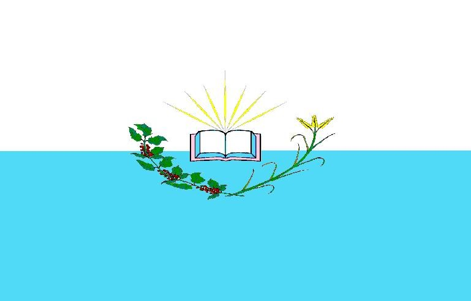

Sou estudante de Desenvolvimento de Software e estou aplicando os conhecimentos adquiridos na construção desta página.

Catalão é uma cidade localizada no estado de Goiás, Brasil. Uma cidade com economia voltada para mineração, agricultura e industrias automobilisticas.